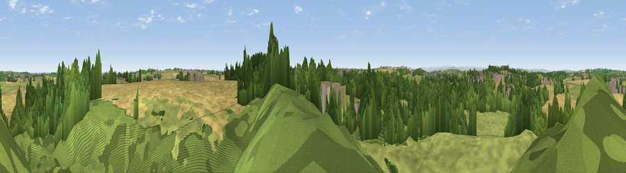

Viewpoint near Haswell
#19361 in England · top 41% of its area beats it · near HaswellThe view, rendered

A 360° render of this exact spot computed from the terrain model, tree cover and land cover — summer colours, afternoon light, calibrated against photographs of famous viewpoints. Real trees, hedges and buildings will differ in detail.
The panorama
Grey silhouette: terrain skyline in each direction (720 bearings, Earth curvature and refraction included). Dashed green: skyline with trees (+15 m) and buildings (+8 m) as obstacles. Blue strip: how far the ground is visible on each bearing.
Where the view opens
Wedge length = distance to the farthest visible ground on that bearing (vegetation-aware). Rings at 10, 25 and 50 km.
What fills the view
36% grassland · 33% cropland · 26% woodland · 3% built-up ·
Angular shares of the visible panorama (visual magnitude), not map area. Landscape diversity 0.54 (0–1 Shannon).
Key numbers
More beautiful places nearby
The staircase of upgrades: each row has a higher view potential than everything closer. Driving times are estimates from straight-line distance, calibrated against real road routing — check an actual route before setting out.
| Place | Direction | Drive | Score |
|---|---|---|---|
| Lily Hill | WNW · 2 km | ~6 min | 65.6 |
| Viewpoint near Easington Colliery | E · 5 km | ~11 min | 69.4 |
| Viewpoint near Easington Colliery | ENE · 6 km | ~12 min | 74.4 |
| Viewpoint near Houghton-le-Spring | N · 8 km | ~16 min | 76.0 |
| Viewpoint near Sunniside | NW · 22 km | ~37 min | 77.6 |
| Pontop Pike | WNW · 26 km | ~41 min | 77.8 |
| Viewpoint near Lazenby | SE · 30 km | ~48 min | 86.4 |
| Warsett Hill | SE · 37 km | ~56 min | 86.8 |
54.77974, -1.39868 · source: screening · position refined by local search. Computed location — check access rights before visiting.